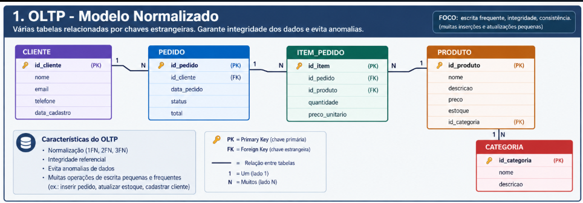
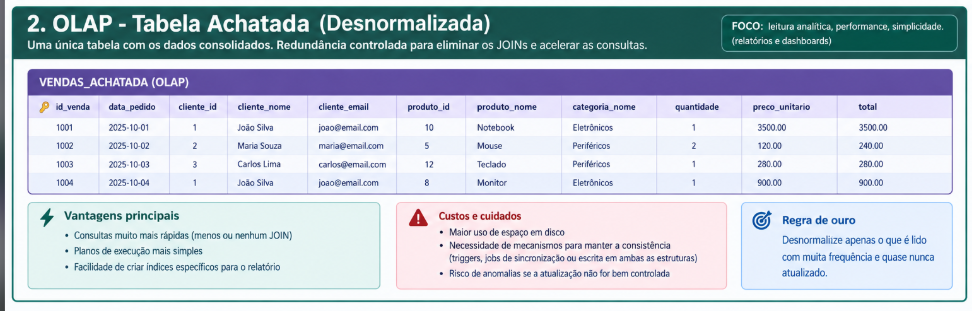

Autoria
Autores:Lucas Silva Marques, Lucas Oliveira Fernandes da Silva, Estephane Barreto, Matheus dos Santos Chaves, Enzo Ferrari
Publicado em: 15 de junho de 2026 | Última revisão: 15 de outubro de 2026
1. Introdução a um Problema Real
Imagine que você gerencia um grande sistema de comércio eletrônico e precisa gerar, várias vezes ao dia, um relatório de vendas por estado. No modelo estritamente normalizado (OLTP), os dados estão divididos em tabelas de clientes, produtos, pedidos e itens de pedido. Para montar o relatório, o banco de dados é obrigado a executar múltiplos JOINs em tempo de execução. Quando as tabelas atingem milhões de linhas, o custo dessa operação degrada severamente o desempenho do sistema — o relatório demora dezenas de segundos (ou minutos) e o servidor fica sobrecarregado. Neste artigo vamos explorar por que a normalização (1FN, 2FN e 3FN) é fundamental, mas nem sempre é o objetivo final, e como a desnormalização introduz redundância controlada para otimizar leituras. Você vai aprender:
- O que são 1FN, 2FN e 3FN e por que elas existem
- A diferença prática entre sistemas OLTP e OLAP
- Quando vale a pena “achatar” tabelas
- Como criar e manter uma tabela desnormalizada de forma segura
- Quais cuidados tomar para não perder consistência dos dados
2. Por que normalizamos? 1FN, 2FN e 3FN
Antes de desnormalizar, precisamos entender o que a normalização resolve. Vamos usar o mesmo cenário de pedidos de uma loja. Tabela inicial (não normalizada)
| pedido_id | cliente | estado | produtos | quantidades | precos |
|---|---|---|---|---|---|
| 1001 | Ana Silva | SP | Notebook Pro, Mouse Gamer | 1, 2 | 4500.00, 125.00 |
| 1002 | Carlos Souza | RJ | Teclado Mecânico | 1 | 350.00 |
- Regra: todos os valores devem ser atômicos (indivisíveis) e não pode haver grupos repetitivos.
- A coluna produtos, quantidades e precos viola a 1FN porque guarda vários valores na mesma célula.
- Solução: separamos em linhas:
| pedido_id | cliente | estado | produto | quantidade | preco |
|---|---|---|---|---|---|
| 1001 | Ana Silva | SP | Notebook Pro | 1 | 4500.00 |
| 1001 | Ana Silva | SP | Mouse Gamer | 2 | 125.00 |
| 1002 | Carlos Souza | RJ | Teclado Mecânico | 1 | 350.00 |
- pedidos (pedido_id, cliente_id, data)
- itens_pedido (pedido_id, produto_id, quantidade, valor_unitario)
- clientes e produtos
CREATE TABLE clientes (
id SERIAL PRIMARY KEY,
nome VARCHAR(100) NOT NULL,
estado CHAR(2) NOT NULL
);
CREATE TABLE produtos (
id SERIAL PRIMARY KEY,
nome VARCHAR(100) NOT NULL,
preco NUMERIC(10,2) NOT NULL
);
CREATE TABLE pedidos (
id SERIAL PRIMARY KEY,
cliente_id INT REFERENCES clientes(id),
data_pedido DATE NOT NULL
);
CREATE TABLE itens_pedido (
id SERIAL PRIMARY KEY,
pedido_id INT REFERENCES pedidos(id),
produto_id INT REFERENCES produtos(id),
quantidade INT NOT NULL,
valor_unitario NUMERIC(10,2) NOT NULL
);3. O Conceito: OLTP vs OLAP
Os sistemas OLTP priorizam integridade e usam exatamente o modelo normalizado acima (1FN, 2FN e 3FN). Os sistemas OLAP priorizam velocidade de leitura de relatórios. Eles aceitam redundância controlada porque o custo de vários JOINs em tabelas grandes se torna proibitivo. A desnormalização é o passo seguinte: depois de ter o modelo em 3FN, criamos estruturas extras otimizadas para consulta.

4. Como funciona a desnormalização
Em vez de manter os dados separados, criamos uma tabela que já contém as informações necessárias para a consulta, mesmo que isso signifique repetir dados do cliente e do produto em cada linha. Vantagens:
- Consultas muito mais rápidas (menos ou nenhum JOIN)
- Planos de execução mais simples
- Facilidade de criar índices específicos para o relatório
-
Custos e cuidados:
- >Maior uso de espaço em disco
- Necessidade de mecanismos para manter a consistência (triggers, jobs ou escrita dupla)
- Risco de anomalias se a atualização não for controlada Regra de ouro: desnormalize apenas o que é lido com muita frequência e quase nunca atualizado.

5. Exemplo Prático: A Tabela Achatada
A partir do modelo 3FN, criamos a tabela desnormalizada:
CREATE TABLE relatorio_vendas_desnormalizado (
id SERIAL PRIMARY KEY,
pedido_id INT NOT NULL,
nome_cliente VARCHAR(100) NOT NULL,
estado_cliente CHAR(2) NOT NULL,
nome_produto VARCHAR(100) NOT NULL,
quantidade INT NOT NULL,
valor_total_item NUMERIC(10,2) NOT NULL,
data_pedido DATE NOT NULL
);SELECT
estado_cliente,
SUM(valor_total_item) AS total_vendas
FROM relatorio_vendas_desnormalizado
GROUP BY estado_cliente
ORDER BY total_vendas DESC;6. Scripts SQL
Os scripts completos estão no repositório (pasta sql/desnormalizacao.sql). Testados no PostgreSQL 16.
-- Tabela desnormalizada para relatório de vendas
CREATE TABLE relatorio_vendas_desnormalizado (
id SERIAL PRIMARY KEY,
pedido_id INT NOT NULL,
nome_cliente VARCHAR(100) NOT NULL,
estado_cliente CHAR(2) NOT NULL,
nome_produto VARCHAR(100) NOT NULL,
quantidade INT NOT NULL,
valor_total_item NUMERIC(10,2) NOT NULL,
data_pedido DATE NOT NULL
);
-- Exemplo de inserção (normalmente feita por trigger ou job)
INSERT INTO relatorio_vendas_desnormalizado
(pedido_id, nome_cliente, estado_cliente, nome_produto, quantidade, valor_total_item, data_pedido)
VALUES
(1001, 'Ana Silva', 'SP', 'Notebook Pro', 1, 4500.00, '2026-06-10'),
(1002, 'Carlos Souza', 'RJ', 'Mouse Gamer', 2, 250.00, '2026-06-11');Ver script completo na pasta sql/desnormalizacao.sql no GitHub.
7. Erros Comuns
- 1- Desnormalizar tudo Criar tabelas achatadas para consultas que quase nunca são executadas. Resultado: desperdício de espaço e complexidade desnecessária.
- 2- Esquecer da consistência Atualizar a tabela normalizada e não propagar a mudança para a tabela desnormalizada. Isso gera relatórios incorretos.
- 3- Não documentar a origem dos dados Outros desenvolvedores não sabem se a tabela é a fonte da verdade ou apenas uma cópia.
- 4- Usar desnormalização em sistemas altamente transacionais Em aplicações com muitas escritas concorrentes, a redundância pode se tornar um pesadelo de sincronização.
8. Referências e Leituras Recomendadas
- Use The Index, Luke - Guia web sobre desempenho e índices de bases de dados
- Documentação Oficial do PostgreSQL.
- Codd, E. F. (1970). A Relational Model of Data for Large Shared Data Banks
- Use The Index, Luke (Markus Winand)